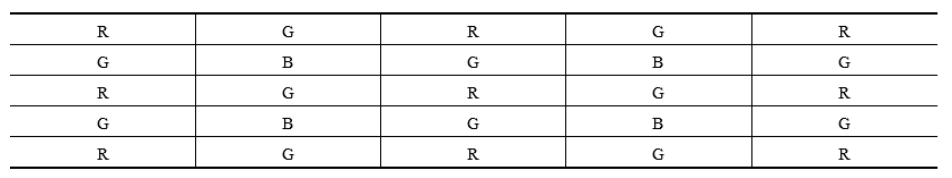
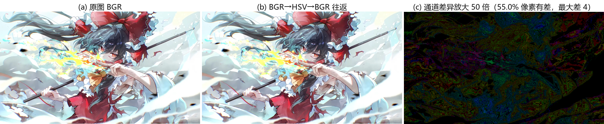
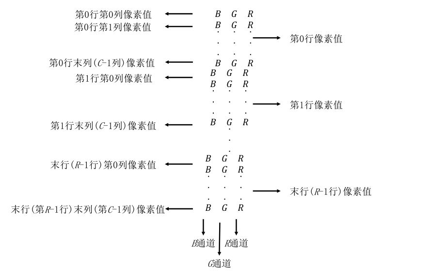
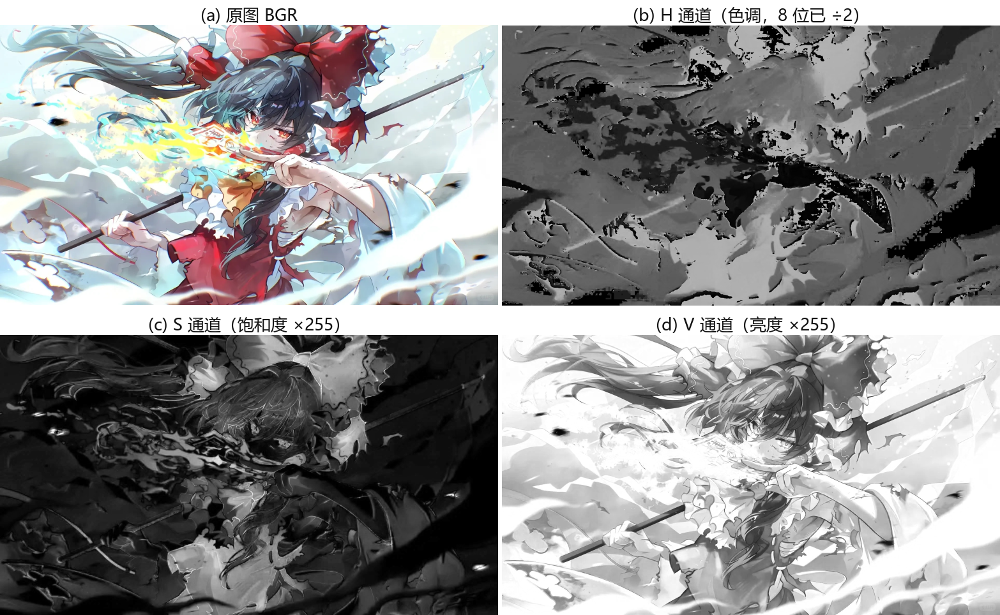
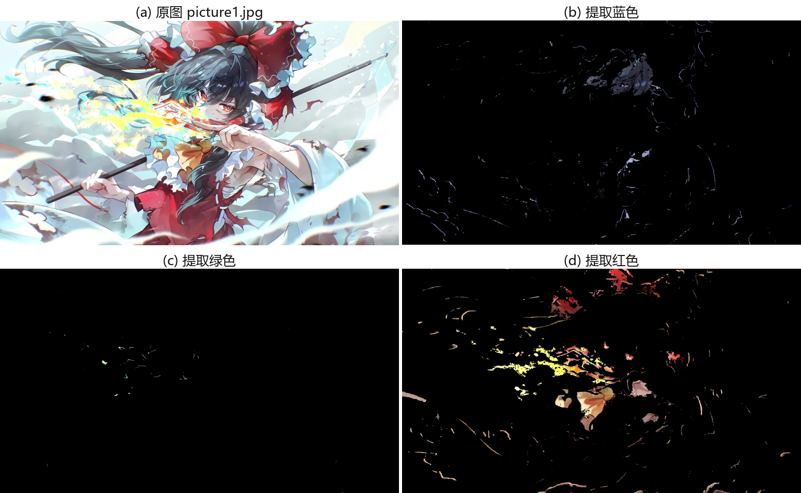
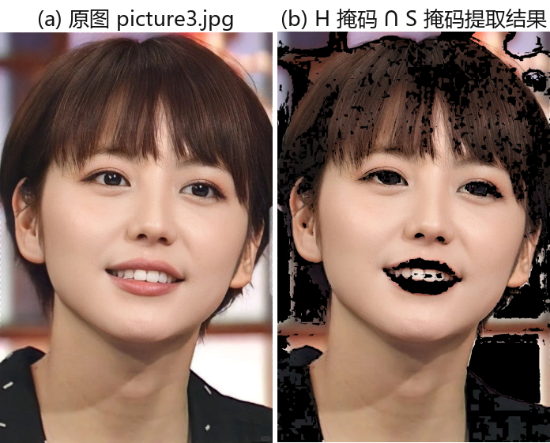
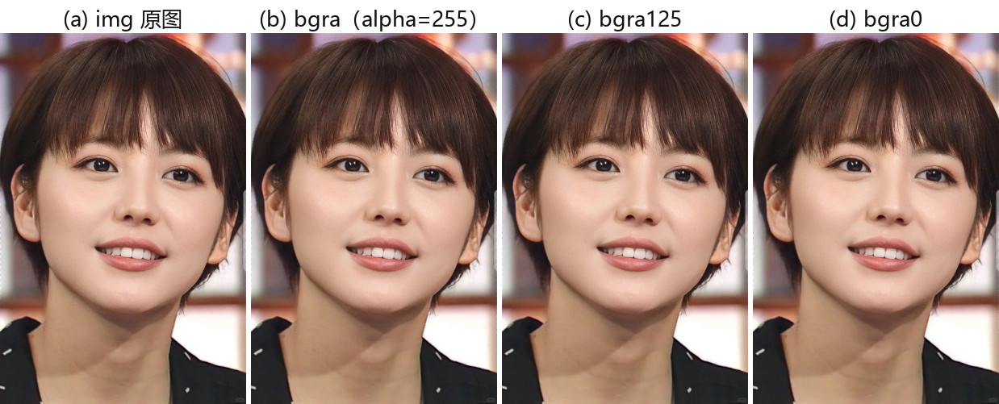
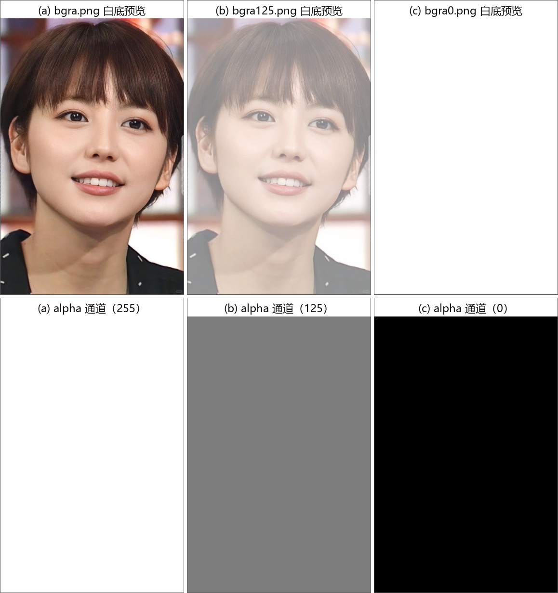

第 4 章 色彩空间类型转换#
本章解决：RGB 是从硬件角度记录颜色的方式，数值本身说不清"这是什么颜色"。本章给出一整套描述颜色的坐标系——GRAY、XYZ、YCrCb、HSV、HLS、CIEL*a*b*、CIEL*u*v*、Bayer——以及它们与 RGB 之间的换算公式，所有转换都封装在
cv2.cvtColor()里，换一个转换码就能完成。重点是 HSV 色彩空间：按色调筛选就能把特定颜色的物体从图里抠出来，配合cv2.inRange()与掩码按位与，可以提取三原色物体、标记肤色、调出艺术效果；最后补上表示透明度的 alpha 通道。
运行环境约定
本章代码引用本目录根下的素材（picture1.jpg、picture2.png、picture3.jpg），路径写作相对路径。运行时工作目录需为 数字图像处理-python 根目录，否则 imread 返回 None。原书用 lenacolor.png（例 4.4、4.5、4.13）、opencv.jpg（例 4.9 的 OpenCV logo）、lesson2.jpg（例 4.10 人像）、barbara.bmp（例 4.11）演示，本章统一换成：picture1.jpg（1080×1920×3）顶替 lena 与 barbara，picture3.jpg（1110×736×3 人像）顶替 lesson2。例 4.9 的 logo 图素材缺失（跟随代码用的 picture4.jpg 同样不在素材目录），本章实跑用 picture1.jpg 顶替（蓝/绿/红掩码命中率分别约 2.08%、0.06%、5.02%），自备一张彩色 logo 图或换其他素材同样可行——阈值命中比例随图而变，代码逻辑不变。另外，跟随代码 ipynb 里用的 cv_show 是未给出定义的辅助函数，运行 ipynb 前先补一句 def cv_show(name, img): cv2.imshow(name, img); cv2.waitKey()。控制台打印的具体数值随图片不同而不同；随机数组的例题沿用原书数组，输出与原书一致。
4.0 本章导图#
4.1 色彩空间基础#
色彩空间（color space）也称颜色空间、彩色空间、颜色模型、彩色系统、彩色模型、色彩模型。比较常见的有 GRAY 色彩空间、XYZ 色彩空间、YCrCb 色彩空间、HSV 色彩空间、HLS 色彩空间、CIEL*a*b* 色彩空间、CIEL*u*v* 色彩空间、Bayer 色彩空间等。每个色彩空间都有自己擅长的处理问题的领域，为了更方便地处理某个具体问题，就要用到色彩空间类型转换——把图像从一个色彩空间转换到另外一个色彩空间。例如：做特征提取、距离计算时，先把图像从 RGB 处理为灰度；一些应用需要把彩色图转成二值图像；用 OpenCV 处理图像时，经常在 RGB 和 HSV 之间来回转换。
4.1.1 GRAY 色彩空间#
GRAY（灰度图像）通常指 8 位灰度图，有 256 个灰度级，像素值范围 \([0, 255]\)。
RGB 转 GRAY 的标准处理方式（也是 OpenCV 采用的方式）：
有时也用简化形式：
GRAY 转 RGB 时，最终所有通道的值都相同：
拓展：0.299、0.587、0.114 从哪来
这是 ITU-R BT.601 标准的亮度系数，来自人眼的感光特性：人眼对绿色最敏感、红色次之、蓝色最弱，所以绿色权重最大、蓝色最小。这也解释了 4.1.3 节 YCrCb 里"绿色分量对亮度的影响最大、蓝色最小"的说法。三个权重相加正好等于 1，纯白（255,255,255）转换后仍是 255。
4.1.2 XYZ 色彩空间#
XYZ 色彩空间由 CIE（International Commission on Illumination，国际照明委员会）定义，是一种更便于计算的色彩空间，可以与 RGB 相互转换。
RGB 转 XYZ：
XYZ 转 RGB：
4.1.3 YCrCb 色彩空间#
人眼视觉系统（HVS, Human Visual System）对颜色的敏感度低于对亮度的敏感度。传统 RGB 色彩空间里三个原色具有相同的重要性，但忽略了亮度信息。
YCrCb 色彩空间中，Y 代表光源的亮度，色度信息保存在 Cr 和 Cb 中：Cr 表示红色分量信息，Cb 表示蓝色分量信息。亮度表示颜色亮或暗的程度，可通过照明中强度成分的加权和计算——在 RGB 光源中，绿色分量影响最大，蓝色分量影响最小。
RGB 转 YCrCb：
delta 的取值与图像类型有关：
YCrCb 转 RGB：
4.1.4 HSV 色彩空间#
RGB 是从硬件角度提出的颜色模型，与人眼的匹配存在一定差异。HSV 色彩空间是面向视觉感知的颜色模型，从心理学和视觉的角度出发，指出人眼的色彩知觉主要包含三要素：
- 色调（Hue，也称色相）：光的颜色。与混合光谱中的主要光波长相关，"赤橙黄绿青蓝紫"就是不同的色调；从波长角度看，不同波长的光呈现不同颜色，体现的正是色调差异。
- 饱和度（Saturation）：色彩的深浅程度，即相对纯净度，或一种颜色混合白光的数量。纯谱色是全饱和的；深红色（红加白）、淡紫色（紫加白）这类颜色是欠饱和的。饱和度与所加白光的数量成反比。
- 亮度（Value）：人眼感受到的光的明暗程度，与物体的反射度有关。掺入的白色越多亮度越高，掺入的黑色越多亮度越低。
具体实现上，把物理空间的颜色分布在圆周上，不同的角度代表不同的颜色，调整色调值就能选颜色，色调取值区间为 \([0, 360]\)。色调取不同值代表的颜色如表 4-1 所示，两个角度之间对应两个颜色的过渡色。
| 色调值（度） | 颜色 |
|---|---|
| 0 | 红色 |
| 60 | 黄色 |
| 120 | 绿色 |
| 180 | 青色 |
| 240 | 蓝色 |
| 300 | 品红色 |
饱和度是一个比例值，范围 \([0, 1]\)，是所选颜色的纯度值与该颜色最大纯度值之比；饱和度为 0 时只剩灰度。亮度表示色彩的明亮程度，范围也是 \([0, 1]\)。
HSV 里取色很直观："色调=0、饱和度=1、亮度=1"是较亮的深红色；"色调=120、饱和度=0.3、亮度=0.4"是较暗的浅绿色。
RGB 转 HSV 前，先把 RGB 值归一化到 \([0, 1]\)，再按下面公式处理：
计算结果可能出现 \(H \lt 0\)，此时再补一步：
由公式可知 \(S \in [0,1]\)、\(V \in [0,1]\)、\(H \in [0,360]\)。HSV 转 RGB 的完整公式见 OpenCV 官方文档。所有这些转换都封装在 cv2.cvtColor() 内，通常直接调用该函数，不必关心内部实现。本章后续小节还会更细致地讨论 HSV。
拓展：OpenCV 官方文档的 8 位 HSV 映射
官方文档（Color Conversions 一节）与上面的公式完全一致，并明确了 8 位图像的输出映射：\(V \leftarrow 255V\)、\(S \leftarrow 255S\)、\(H \leftarrow H/2\)（把 \([0,360]\) 压进 8 位可表示的 \([0,255]\)）。32 位浮点图不做缩放，H 仍是 \([0,360]\)；16 位 HSV 目前不支持。记住这条，4.4 节的"为什么蓝色是 120"就有出处了。
4.1.5 HLS 色彩空间#
HLS 色彩空间的三要素是色调 H（Hue）、光亮度/明度 L（Lightness）、饱和度 S（Saturation）。与 HSV 类似，只是用"光亮度/明度 L"顶替了"亮度 Value"。
- 色调：人眼能感知的颜色。HLS 模型中所有颜色分布在一个平面的色调环上，整个色调环是 360 度的圆心角，不同角度代表不同颜色（对应关系同表 4-1）。
- 光亮度/明度：控制色彩的明暗变化，取值 \([0, 1]\)，用来衡量有多少光线从物体表面反射出来。它对眼睛感知颜色很重要——物体处在光线太强或太暗的地方时，眼睛无法准确感知其颜色。
- 饱和度：用 \([0, 1]\) 的值描述相同色调、相同明度下色彩的纯度变化。值越大颜色越纯、越鲜艳；值越小纯度越低、越暗沉。通常用它表示颜色的深浅，比如深绿色、浅绿色。
4.1.6 CIEL*a*b* 色彩空间#
CIEL*a*b* 色彩空间是均匀色彩空间模型，也是面向视觉感知的颜色模型。均匀色彩空间的定义：人所观察到的两种颜色的区别程度，与这两种颜色在该色彩空间中对应点之间的欧式距离成正比。
CIEL*a*b* 中，L* 分量表示像素的亮度，取值 \([0, 100]\)，从纯黑到纯白；a* 分量表示从红色到绿色的范围，取值 \([-127, 127]\)；b* 分量表示从黄色到蓝色的范围，取值 \([-127, 127]\)。
RGB 转 CIEL*a*b* 前先把 RGB 值归一化到 \([0, 1]\)。该空间在 CIE 的 XYZ 基础上发展而来，所以先转 XYZ 再转 CIEL*a*b*：
其中：
结果中各分量的取值范围：\(L \in [0,100]\)、\(a \in [-127,127]\)、\(b \in [-127,127]\)。
拓展：均匀色彩空间有什么用
既然"感知差异 ∝ 空间距离"，就能用两点的欧氏距离算色差（常记作 ΔE），回答"这两个颜色人眼看起来差多少"。配色方案、颜色迁移、图像质量评价、印刷色差检验，背后用的都是 Lab 的这一性质。在 RGB 里直接算欧氏距离，数值差得多的两个颜色人眼可能觉得差不多，反之亦然。
4.1.7 CIEL*u*v* 色彩空间#
CIEL*u*v* 与 CIEL*a*b* 一样是均匀颜色模型。它与设备无关，适用于显示器显示和根据加色原理进行组合的场合；该模型强调对红色的表示——对红色的变化比较敏感，对蓝色的变化不太敏感。
RGB 转 CIEL*u*v* 同样先过 XYZ（矩阵同 4.1.6 节），再从 XYZ 转 CIEL*u*v*：
结果中各分量的取值范围：\(L \in [0,100]\)、\(u \in [-134, 220]\)、\(v \in [-140, 122]\)。
4.1.8 Bayer 色彩空间#
Bayer 色彩空间（Bayer 模型）广泛应用在 CCD 和 CMOS 相机中。它能够从如图 4.1 所示的单平面 R、G、B 交错表内获取彩色图像。

输出的 RGB 图像像素点值，根据当前点的 1 个、2 个或 4 个邻域像素点中相同颜色的像素值获得。上述模式可以通过移动一个左边的像素或者上方的像素来完成修改。在 cv2.cvtColor() 的转换码中，通常用两个特定的参数 x 和 y 表示特定的模式，该模式由图 4.1 第二行中第 2 列与第 3 列的值指定——图 4.1 就是典型的"BG"模式。
常见的模式还有很多，例如 4.2 节表 4-2 中的 cv2.COLOR_BayerBG2BGR、cv2.COLOR_BayerGB2BGR、cv2.COLOR_BayerRG2BGR、cv2.COLOR_BayerGR2BGR、cv2.COLOR_BayerBG2RGB、cv2.COLOR_BayerGB2RGB、cv2.COLOR_BayerRG2RGB、cv2.COLOR_BayerGR2RGB 等。
4.2 类型转换函数#
OpenCV 用 cv2.cvtColor() 实现色彩空间变换，它能在多个色彩空间之间转换。语法：
- dst：输出图像，与输入图像具有同样的数据类型和深度。
- src：原始输入图像，可以是 8 位无符号图像、16 位无符号图像或单精度浮点数图像。
- code：色彩空间转换码，枚举值见表 4-2。
- dstCn：目标图像的通道数；默认 0 时，通道数由输入图像和 code 自动推得。
表 4-2 的枚举值按功能分组重新排版如下（同一行的转换码功能相同）：
| 功能（备注） | 转换码 |
|---|---|
| 为 BGR 或 RGB 添加 alpha 通道（alpha 是透明属性） | cv2.COLOR_BGR2BGRA、cv2.COLOR_RGB2RGBA |
| 从 BGR 或 RGB 内删除 alpha 通道 | cv2.COLOR_BGRA2BGR、cv2.COLOR_RGBA2RGB |
| 在 BGR 和 RGB 之间转换（含/不含 alpha） | cv2.COLOR_BGR2RGBA、cv2.COLOR_RGB2BGRA、cv2.COLOR_RGBA2BGR、cv2.COLOR_BGRA2RGB、cv2.COLOR_BGR2RGB、cv2.COLOR_RGB2BGR、cv2.COLOR_BGRA2RGBA、cv2.COLOR_RGBA2BGRA |
| 在 RGB/BGR 和灰度图像之间转换 | cv2.COLOR_BGR2GRAY、cv2.COLOR_RGB2GRAY、cv2.COLOR_GRAY2BGR、cv2.COLOR_GRAY2RGB、cv2.COLOR_GRAY2BGRA、cv2.COLOR_GRAY2RGBA、cv2.COLOR_BGRA2GRAY、cv2.COLOR_RGBA2GRAY |
| 在 RGB/BGR 和 BGR565（16 位图像）之间转换 | cv2.COLOR_BGR2BGR565、cv2.COLOR_RGB2BGR565、cv2.COLOR_BGR5652BGR、cv2.COLOR_BGR5652RGB、cv2.COLOR_BGRA2BGR565、cv2.COLOR_RGBA2BGR565、cv2.COLOR_BGR5652BGRA、cv2.COLOR_BGR5652RGBA |
| 在灰度图像和 BGR565（16 位图像）之间转换 | cv2.COLOR_GRAY2BGR565、cv2.COLOR_BGR5652GRAY |
| 在 RGB/BGR 和 BGR555（16 位图像）之间转换 | cv2.COLOR_BGR2BGR555、cv2.COLOR_RGB2BGR555、cv2.COLOR_BGR5552BGR、cv2.COLOR_BGR5552RGB、cv2.COLOR_BGRA2BGR555、cv2.COLOR_RGBA2BGR555、cv2.COLOR_BGR5552BGRA、cv2.COLOR_BGR5552RGBA |
| 在灰度图像和 BGR555（16 位图像）之间转换 | cv2.COLOR_GRAY2BGR555、cv2.COLOR_BGR5552GRAY |
| 在 RGB/BGR 和 CIE XYZ 之间转换 | cv2.COLOR_BGR2XYZ、cv2.COLOR_RGB2XYZ、cv2.COLOR_XYZ2BGR、cv2.COLOR_XYZ2RGB |
| 在 RGB/BGR 和 luma-chroma（aka YCC）之间转换 | cv2.COLOR_BGR2YCrCb、cv2.COLOR_RGB2YCrCb、cv2.COLOR_YCrCb2BGR、cv2.COLOR_YCrCb2RGB |
| 将 RGB/BGR 转换为 HSV（Hue Saturation Value） | cv2.COLOR_BGR2HSV、cv2.COLOR_RGB2HSV |
| 将 RGB/BGR 转换为 CIE Lab | cv2.COLOR_BGR2Lab、cv2.COLOR_RGB2Lab |
| 将 RGB/BGR 转换为 CIE Luv | cv2.COLOR_BGR2Luv、cv2.COLOR_RGB2Luv |
| 将 RGB/BGR 转换为 HLS（Hue Lightness Saturation） | cv2.COLOR_BGR2HLS、cv2.COLOR_RGB2HLS |
| HSV/Lab/Luv/HLS 转换回 RGB/BGR | cv2.COLOR_HSV2BGR、cv2.COLOR_HSV2RGB、cv2.COLOR_Lab2BGR、cv2.COLOR_Lab2RGB、cv2.COLOR_Luv2BGR、cv2.COLOR_Luv2RGB、cv2.COLOR_HLS2BGR、cv2.COLOR_HLS2RGB |
| HSV/HLS 全量程版本 | cv2.COLOR_BGR2HSV_FULL、cv2.COLOR_RGB2HSV_FULL、cv2.COLOR_BGR2HLS_FULL、cv2.COLOR_RGB2HLS_FULL、cv2.COLOR_HSV2BGR_FULL、cv2.COLOR_HSV2RGB_FULL、cv2.COLOR_HLS2BGR_FULL、cv2.COLOR_HLS2RGB_FULL |
| 线性 RGB 与 Lab/Luv 互转 | cv2.COLOR_LBGR2Lab、cv2.COLOR_LRGB2Lab、cv2.COLOR_LBGR2Luv、cv2.COLOR_LRGB2Luv、cv2.COLOR_Lab2LBGR、cv2.COLOR_Lab2LRGB、cv2.COLOR_Luv2LBGR、cv2.COLOR_Luv2LRGB |
| 在 RGB/BGR 和 YUV 之间转换 | cv2.COLOR_BGR2YUV、cv2.COLOR_RGB2YUV、cv2.COLOR_YUV2BGR、cv2.COLOR_YUV2RGB |
| 将 YUV 4:2:0 族转换为 RGB | cv2.COLOR_YUV2RGB_NV12、cv2.COLOR_YUV2BGR_NV12、cv2.COLOR_YUV2RGB_NV21、cv2.COLOR_YUV2BGR_NV21、cv2.COLOR_YUV420sp2RGB、cv2.COLOR_YUV420sp2BGR、cv2.COLOR_YUV2RGBA_NV12、cv2.COLOR_YUV2BGRA_NV12、cv2.COLOR_YUV2RGBA_NV21、cv2.COLOR_YUV2BGRA_NV21、cv2.COLOR_YUV420sp2RGBA、cv2.COLOR_YUV420sp2BGRA、cv2.COLOR_YUV2RGB_YV12、cv2.COLOR_YUV2BGR_YV12、cv2.COLOR_YUV2RGB_IYUV、cv2.COLOR_YUV2BGR_IYUV、cv2.COLOR_YUV2RGB_I420、cv2.COLOR_YUV2BGR_I420、cv2.COLOR_YUV420p2RGB、cv2.COLOR_YUV420p2BGR、cv2.COLOR_YUV2RGBA_YV12、cv2.COLOR_YUV2BGRA_YV12、cv2.COLOR_YUV2RGBA_IYUV、cv2.COLOR_YUV2BGRA_IYUV、cv2.COLOR_YUV2RGBA_I420、cv2.COLOR_YUV2BGRA_I420、cv2.COLOR_YUV420p2RGBA、cv2.COLOR_YUV420p2BGRA |
| 将 YUV 4:2:0 族转换为灰度 | cv2.COLOR_YUV2GRAY_420、cv2.COLOR_YUV2GRAY_NV21、cv2.COLOR_YUV2GRAY_NV12、cv2.COLOR_YUV2GRAY_YV12、cv2.COLOR_YUV2GRAY_IYUV、cv2.COLOR_YUV2GRAY_I420、cv2.COLOR_YUV420sp2GRAY、cv2.COLOR_YUV420p2GRAY |
| 将 YUV 4:2:2 族转换为 RGB | cv2.COLOR_YUV2RGB_UYVY、cv2.COLOR_YUV2BGR_UYVY、cv2.COLOR_YUV2RGB_Y422、cv2.COLOR_YUV2BGR_Y422、cv2.COLOR_YUV2RGB_UYNV、cv2.COLOR_YUV2BGR_UYNV、cv2.COLOR_YUV2RGBA_UYVY、cv2.COLOR_YUV2BGRA_UYVY、cv2.COLOR_YUV2RGBA_Y422、cv2.COLOR_YUV2BGRA_Y422、cv2.COLOR_YUV2RGBA_UYNV、cv2.COLOR_YUV2BGRA_UYNV、cv2.COLOR_YUV2RGB_YUY2、cv2.COLOR_YUV2BGR_YUY2、cv2.COLOR_YUV2RGB_YVYU、cv2.COLOR_YUV2BGR_YVYU、cv2.COLOR_YUV2RGB_YUYV、cv2.COLOR_YUV2BGR_YUYV、cv2.COLOR_YUV2RGB_YUNV、cv2.COLOR_YUV2BGR_YUNV、cv2.COLOR_YUV2RGBA_YUY2、cv2.COLOR_YUV2BGRA_YUY2、cv2.COLOR_YUV2RGBA_YVYU、cv2.COLOR_YUV2BGRA_YVYU、cv2.COLOR_YUV2RGBA_YUYV、cv2.COLOR_YUV2BGRA_YUYV、cv2.COLOR_YUV2RGBA_YUNV、cv2.COLOR_YUV2BGRA_YUNV |
| 将 YUV 4:2:2 族转换为灰度 | cv2.COLOR_YUV2GRAY_UYVY、cv2.COLOR_YUV2GRAY_YUY2、cv2.COLOR_YUV2GRAY_Y422、cv2.COLOR_YUV2GRAY_UYNV、cv2.COLOR_YUV2GRAY_YVYU、cv2.COLOR_YUV2GRAY_YUYV、cv2.COLOR_YUV2GRAY_YUNV |
| Alpha 预乘（Alpha premultiplication） | cv2.COLOR_RGBA2mRGBA、cv2.COLOR_mRGBA2RGBA |
| 将 RGB 族转换为 YUV 4:2:0 族 | cv2.COLOR_RGB2YUV_I420、cv2.COLOR_BGR2YUV_I420、cv2.COLOR_RGB2YUV_IYUV、cv2.COLOR_BGR2YUV_IYUV、cv2.COLOR_RGBA2YUV_I420、cv2.COLOR_BGRA2YUV_I420、cv2.COLOR_RGBA2YUV_IYUV、cv2.COLOR_BGRA2YUV_IYUV、cv2.COLOR_RGB2YUV_YV12、cv2.COLOR_BGR2YUV_YV12、cv2.COLOR_RGBA2YUV_YV12、cv2.COLOR_BGRA2YUV_YV12 |
| 逆马赛克（Demosaicing） | cv2.COLOR_BayerBG2BGR、cv2.COLOR_BayerGB2BGR、cv2.COLOR_BayerRG2BGR、cv2.COLOR_BayerGR2BGR、cv2.COLOR_BayerBG2RGB、cv2.COLOR_BayerGB2RGB、cv2.COLOR_BayerRG2RGB、cv2.COLOR_BayerGR2RGB、cv2.COLOR_BayerBG2GRAY、cv2.COLOR_BayerGB2GRAY、cv2.COLOR_BayerRG2GRAY、cv2.COLOR_BayerGR2GRAY |
| 逆马赛克：可变数量梯度（VNG） | cv2.COLOR_BayerBG2BGR_VNG、cv2.COLOR_BayerGB2BGR_VNG、cv2.COLOR_BayerRG2BGR_VNG、cv2.COLOR_BayerGR2BGR_VNG、cv2.COLOR_BayerBG2RGB_VNG、cv2.COLOR_BayerGB2RGB_VNG、cv2.COLOR_BayerRG2RGB_VNG、cv2.COLOR_BayerGR2RGB_VNG |
| 逆马赛克：边缘感知（Edge-Aware） | cv2.COLOR_BayerBG2BGR_EA、cv2.COLOR_BayerGB2BGR_EA、cv2.COLOR_BayerRG2BGR_EA、cv2.COLOR_BayerGR2BGR_EA、cv2.COLOR_BayerBG2RGB_EA、cv2.COLOR_BayerGB2RGB_EA、cv2.COLOR_BayerRG2RGB_EA、cv2.COLOR_BayerGR2RGB_EA |
| 逆马赛克：带 alpha 通道 | cv2.COLOR_BayerBG2BGRA、cv2.COLOR_BayerGB2BGRA、cv2.COLOR_BayerRG2BGRA、cv2.COLOR_BayerGR2BGRA、cv2.COLOR_BayerBG2RGBA、cv2.COLOR_BayerGB2RGBA、cv2.COLOR_BayerRG2RGBA、cv2.COLOR_BayerGR2RGBA |
| 转换码枚举上界标记 | cv2.COLOR_COLORCVT_MAX |
拓展：带 *_FULL 后缀的转换码
_FULL 是全量程版本：普通 COLOR_BGR2HSV 把色调 H 除以 2 压进 \([0,180]\)，而 COLOR_BGR2HSV_FULL 让 H 直接用满 \([0,255]\) 表示完整的 \([0°,360°)\)，不再除以 2。想在 8 位图里表达全部 360° 色调时用 FULL 版。
需要注意，BGR 色彩空间与传统的 RGB 色彩空间不同：对一个标准的 24 位位图，BGR 的第 1 个 8 位（第 1 个字节）存储蓝色组成信息（Blue component），第 2 个 8 位存储绿色组成信息（Green component），第 3 个 8 位存储红色组成信息（Red component）；第 4、5、6 个字节同样依次存储蓝、绿、红，以此类推。
色彩空间转换用到如下约定：
- 8 位图像值的范围是 \([0, 255]\)；
- 16 位图像值的范围是 \([0, 65535]\)；
- 浮点数图像值的范围是 \([0.0, 1.0]\)。
对线性转换来说，取值范围无关紧要；对非线性转换来说，输入的 RGB 图像必须归一化到对应取值范围内，才能得到正确的转换结果。
例如 8 位图能表示的灰度级有 \(2^8 = 256\) 个，最多表示 256 个状态，通常是 \([0,255]\) 的值。但很多色彩空间的值并不落在 \([0,255]\) 内，这时就要把值映射进来：
- HSV 或 HLS 的色调值通常在 \([0, 360)\)，8 位图转换后色调要除以 2，值域变成 \([0, 180)\)，才能放进 8 位图能表示的范围；
- CIEL*a*b* 的 a、b 通道范围是 \([-127, 127]\)，为适应 \([0, 255]\)，每个值要加上 127。
由于计算过程存在四舍五入，转换过程并不是精准可逆的。
实测 picture1.jpg 走 BGR→HSV→BGR 往返：55.0% 的像素与原图存在差异，单通道最大差 4。肉眼几乎看不出 (a) 与 (b) 的区别，图 4.31 © 把通道差异放大 50 倍后可视化——高饱和彩色区域、强边缘附近差异最明显，白背景、灰云等低饱和区域基本为 0。

4.3 类型转换实例#
本节介绍几种常用的色彩空间转换实例，帮助理解 cv2.cvtColor() 的用法。
4.3.1 通过数组观察转换效果#
用小尺寸数组模拟图像，作为 cv2.cvtColor() 的处理对象，方便观察。
【例 4.1】将 BGR 图像转换为灰度图像。
# ===== 4.3.1 例 4.1：BGR -> GRAY，并手工验算一个点 =====
import cv2
import numpy as np
img = np.random.randint(0, 256, size=[2, 4, 3], dtype=np.uint8)
rst = cv2.cvtColor(img, cv2.COLOR_BGR2GRAY)
print("img=\n", img)
print("rst=\n", rst)
print("像素点(1,0)直接计算得到的值=",
img[1, 0, 0] * 0.114 + img[1, 0, 1] * 0.587 + img[1, 0, 2] * 0.299)
print("像素点(1,0)使用公式cv2.cvtColor()转换值=", rst[1, 0])
运行程序（沿用原书随机数组时的输出）：
img=
[[[166 97 102]
[ 73 31 51]
[221 94 158]
[143 101 172]]
[[ 96 140 92]
[ 19 156 34]
[ 16 113 202]
[116 236 238]]]
rst=
[[106 42 128 127]
[121 104 129 223]]
像素点(1,0)直接计算得到的值= 120.63199999999999
像素点(1,0)使用公式cv2.cvtColor()转换值= 121
以 rst[1,0] 为例看它是怎么算出来的。rst[1,0] 是目标灰度图第 1 行第 0 列的像素，需要用原图 BGR 内同位置的 B、G、R 三个通道值计算：
- B 通道：
img[1,0,0] = 96； - G 通道：
img[1,0,1] = 140； - R 通道：
img[1,0,2] = 92。
代入公式（结果已实测复现）：
目标灰度图是 8 位图，像素值必须是 \([0,255]\) 内的无符号整数，把小数结果四舍五入得 121，作为 rst[1,0] 的值。与函数输出一致。一般情况下不必关心这么细节的问题，熟练使用 cv2.cvtColor() 即可。
在 OpenCV 中，灰度图像按行列直接存储；BGR 模式的图像会依次把 B、G、R 通道的像素点以行为单位按顺序存在 ndarray 的列中。大小为 R 行 × C 列的 BGR 图像，存储方式如图 4.2 所示。

【例 4.2】将灰度图像转换为 BGR 图像。
# ===== 4.3.1 例 4.2：GRAY -> BGR，三个通道填同一个值 =====
import cv2
import numpy as np
img = np.random.randint(0, 256, size=[2, 4], dtype=np.uint8)
rst = cv2.cvtColor(img, cv2.COLOR_GRAY2BGR)
print("img=\n", img)
print("rst=\n", rst)
运行程序（沿用原书随机数组时的输出）：
img=
[[ 58 254 137 123]
[100 150 7 42]]
rst=
[[[ 58 58 58]
[254 254 254]
[137 137 137]
[123 123 123]]
[[100 100 100]
[150 150 150]
[ 7 7 7]
[ 42 42 42]]]
印证了 GRAY 转 RGB/BGR 时所有通道的值都相同（\(R = G = B = \mathrm{Gray}\)），也印证了 BGR 图像在 OpenCV 内的存储方式。实测 rst[0,0] = [58 58 58]，三通道逐元素相等。
【例 4.3】将图像在 BGR 和 RGB 模式之间相互转换。
# ===== 4.3.1 例 4.3：BGR <-> RGB，首尾通道互换 =====
import cv2
import numpy as np
img = np.random.randint(0, 256, size=[2, 4, 3], dtype=np.uint8)
rgb = cv2.cvtColor(img, cv2.COLOR_BGR2RGB)
bgr = cv2.cvtColor(rgb, cv2.COLOR_RGB2BGR)
print("img=\n", img)
print("rgb=\n", rgb)
print("bgr=\n", bgr)
运行程序（沿用原书随机数组时的输出）：
img=
[[[ 12 173 157]
[216 2 220]
[ 49 145 157]
[124 203 44]]
[[140 196 171]
[ 90 195 187]
[158 199 113]
[213 78 164]]]
rgb=
[[[157 173 12]
[220 2 216]
[157 145 49]
[ 44 203 124]]
[[171 196 140]
[187 195 90]
[113 199 158]
[164 78 213]]]
bgr=
[[[ 12 173 157]
[216 2 220]
[ 49 145 157]
[124 203 44]]
[[140 196 171]
[ 90 195 187]
[158 199 113]
[213 78 164]]]
BGR 与 RGB 互转时，R 通道和 B 通道的位置发生交换（首像素 [12 173 157] 变成 [157 173 12]，G 不动）。再转回来，bgr 与 img 逐像素相同。
4.3.2 图像处理实例#
【例 4.4】将图像在 BGR 模式和灰度图像之间相互转换。
# ===== 4.3.2 例 4.4：shape 在转换前后的变化 =====
import cv2
lena = cv2.imread("picture1.jpg") # 原书 lenacolor.png
gray = cv2.cvtColor(lena, cv2.COLOR_BGR2GRAY)
rgb = cv2.cvtColor(gray, cv2.COLOR_GRAY2BGR)
#==========打印shape============
print("lena.shape=", lena.shape)
print("gray.shape=", gray.shape)
print("rgb.shape=", rgb.shape)
#==========显示效果============
cv2.imshow("lena", lena)
cv2.imshow("gray", gray)
cv2.imshow("rgb", rgb)
cv2.waitKey()
cv2.destroyAllWindows()
实测输出（picture1.jpg；原书 lenacolor.png 为 512×512）：
通过 shape 属性就能看到转换前后的色彩空间变化：三维 → 二维 → 三维。注意 COLOR_GRAY2BGR 得到的"RGB 图像"里 B、G、R 三个通道的值完全一样，看起来仍是灰度图。
【例 4.5】将图像从 BGR 模式转换为 RGB 模式。
# ===== 4.3.2 例 4.5：BGR -> RGB 后直接显示会偏色 =====
import cv2
lena = cv2.imread("picture1.jpg") # 原书 lenacolor.png
rgb = cv2.cvtColor(lena, cv2.COLOR_BGR2RGB)
cv2.imshow("lena", lena)
cv2.imshow("rgb", rgb)
cv2.waitKey()
cv2.destroyAllWindows()
左图是 BGR 通道顺序的图像，正常显示；右图换成 RGB 通道顺序后红色蝴蝶结变成蓝色、头发偏黄，整体偏蓝紫（红蓝互换）。第 2 章"merge 通道顺序一换颜色就变"的现象，这里是第 3 种触发方式。
4.4 HSV 色彩空间讨论#
RGB 是被广泛接受的色彩空间，但过于抽象——不能直接通过数值感知具体色彩。我们更习惯用直观的方式感知颜色，HSV 提供了这种方式：通过色调、饱和度、亮度来感知颜色。除 HSV 外，本章讨论的其他大多数色彩空间都不方便人们对颜色理解和解释——现实中不可能用"每种颜料的百分比"（RGB 色彩空间）来形容一件衣服的颜色。
4.4.1 基础知识#
4.1.4 节已经简单介绍过 HSV，这里从值范围的角度再梳理一遍。HSV 从心理学和视觉的角度出发，提出人眼色彩知觉的三要素：
- H：色调（Hue，也称色相）；
- S：饱和度（Saturation）；
- V：亮度（Value）。
1．色调 H
HSV 中色调 H 的取值范围是 \([0, 360]\)。8 位图像每个像素点只有 \(2^8 = 256\) 个灰度级，所以在 8 位图内表示 HSV 时，要把色调的角度值映射到 \([0, 255]\)。OpenCV 的做法是直接把角度值除以 2，得到 \([0, 180]\) 内的值，以适应 8 位二进制的存储范围。
色调值为 0 表示红色、300 表示品红色，如表 4-3 所示；OpenCV 把色调值除以 2 之后，得到表 4-4。
| 色调值（度） | 颜色 | OpenCV 8 位存储值（÷2） |
|---|---|---|
| 0 | 红色 | 0 |
| 60 | 黄色 | 30 |
| 120 | 绿色 | 60 |
| 180 | 青色 | 90 |
| 240 | 蓝色 | 120 |
| 300 | 品红色 | 150 |
每个色调值对应一个指定的色彩，与饱和度和亮度无关。确定值范围后，就可以直接在图像的 H 通道内查找对应的值，从而找到特定的颜色。例如在 HSV 图像中，H 通道内值为 120 的像素点对应蓝色——查找 H 通道内值为 120 的像素点，找到的就是蓝色像素点。在这个基础上，分析各种对象对应的 HSV 值，就能查找不同的对象：比如分析出肤色的 HSV 值，就可以直接在图像内按肤色的 HSV 值查找人脸等皮肤区域。
2．饱和度 S
饱和度值的范围是 \([0, 1]\)，要说明三个问题：
- 灰度颜色的 R、G、B 成分相等，是一种极不饱和的颜色，所以灰度颜色的饱和度值是 0；
- 作为灰度图像显示时，较亮区域对应的颜色具有较高的饱和度；
- 如果颜色的饱和度很低，那么它计算所得的色调就不可靠。
转换到 8 位图时，饱和度 S 同样要从 \([0,1]\) 映射到 \([0,255]\)。
3．亮度 V
亮度的范围与饱和度一致，都是 \([0, 1]\)，在 OpenCV 内同样映射到 \([0, 255]\)。亮度值越大图像越亮，亮度值越低图像越暗；亮度值为 0 时图像是纯黑色。
把 picture1.jpg 转到 HSV 后按通道拆开（图 4.30），三个分量各管一件事：H 通道里彩色区域随色调不同呈不同灰度，而白背景等低饱和像素的色调不可靠，直接落成 0（黑）；S 通道里越鲜艳的区域越亮，白、灰区域接近 0；V 通道则是一幅亮度图。

4.4.2 获取指定颜色#
获取 RGB 颜色在 HSV 内对应值的方式有多种，例如用图像编辑软件或在线网站。注意：OpenCV 转换 HSV 时为了满足 8 位图要求做了映射处理，软件或网站给出的 HSV 值还要进一步映射，才能与 OpenCV 内的值一致。
本节用程序直接查看 OpenCV 内 RGB 转 HSV 后各分量的值。
【例 4.6】测试 RGB 中不同颜色转换到 HSV 后的对应值。
对蓝色、绿色、红色三个单像素分别测试。先用 np.zeros([1,1,3], dtype=np.uint8) 生成只有一个像素的图像，再对通道赋值指定颜色：
imgBlue[0,0,0]=255：第 0 个通道（B 通道）置 255，即蓝色；imgGreen[0,0,1]=255：第 1 个通道（G 通道）置 255，即绿色；imgRed[0,0,2]=255：第 2 个通道（R 通道）置 255，即红色。
然后用 cv2.cvtColor(Blue, cv2.COLOR_BGR2HSV) 转换并打印结果。
# ===== 4.4.2 例 4.6：单像素测三个原色的 HSV 值 =====
import cv2
import numpy as np
#=========测试一下OpenCV中蓝色的HSV模式值=============
imgBlue = np.zeros([1, 1, 3], dtype=np.uint8)
imgBlue[0, 0, 0] = 255
Blue = imgBlue
BlueHSV = cv2.cvtColor(Blue, cv2.COLOR_BGR2HSV)
print("Blue=\n", Blue)
print("BlueHSV=\n", BlueHSV)
#=========测试一下OpenCV中绿色的HSV模式值=============
imgGreen = np.zeros([1, 1, 3], dtype=np.uint8)
imgGreen[0, 0, 1] = 255
Green = imgGreen
GreenHSV = cv2.cvtColor(Green, cv2.COLOR_BGR2HSV)
print("Green=\n", Green)
print("GreenHSV=\n", GreenHSV)
#=========测试一下OpenCV中红色的HSV模式值=============
imgRed = np.zeros([1, 1, 3], dtype=np.uint8)
imgRed[0, 0, 2] = 255
Red = imgRed
RedHSV = cv2.cvtColor(Red, cv2.COLOR_BGR2HSV)
print("Red=\n", Red)
print("RedHSV=\n", RedHSV)
运行程序，输出（已实测复现）：
Blue=
[[[255 0 0]]]
BlueHSV=
[[[120 255 255]]]
Green=
[[[ 0 255 0]]]
GreenHSV=
[[[ 60 255 255]]]
Red=
[[[ 0 0 255]]]
RedHSV=
[[[ 0 255 255]]]
三种颜色的值与表 4-4 完全一致：蓝色 H=120、绿色 H=60、红色 H=0，S、V 都拉满到 255。这也是 OpenCV 官方教程推荐的单点测色法——想知道某颜色的 HSV 区间，先把这个颜色做成 1×1×3 的数组转一次 HSV。
4.4.3 标记指定颜色#
在 HSV 色彩空间中，H 通道对应不同的颜色——颜色的差异主要体现在 H 通道值的不同上。对 H 通道值进行筛选，就能筛选出特定的颜色：如果只把 H 通道内值为 240（OpenCV 内为 120）的像素显示出来，图像中就只显示蓝色部分。
原书笔误：'饱和度Hue 通道'
原书 4.4.3 开头写"H 通道（饱和度Hue 通道）"。H 是色调（Hue），不是饱和度（Saturation），括号内应为"色调 Hue 通道"。
本节先展示实现细节，再给出把图像内特定颜色标记出来（屏蔽其他颜色）的完整例题。
1．通过 inRange 函数锁定特定值
OpenCV 用 cv2.inRange() 判断图像内像素值是否在指定范围内，语法：
- dst：输出结果，大小与 src 一致。
- src：要检查的数组或图像。
- lowerb：范围下界。
- upperb：范围上界。
返回值 dst 与 src 等大小，其值取决于 src 中对应位置的值是否落在区间 \([lowerb, upperb]\) 内：
- 在指定区间内，dst 对应位置为 255；
- 不在指定区间内，dst 对应位置为 0。
【例 4.7】将图像内 \([100, 200]\) 范围内的值标注出来。
# ===== 4.4.3 例 4.7：inRange 的基本行为 =====
import cv2
import numpy as np
img = np.random.randint(0, 256, size=[5, 5], dtype=np.uint8)
min = 100
max = 200
mask = cv2.inRange(img, min, max)
print("img=\n", img)
print("mask=\n", mask)
运行程序（随机数组，每次运行不同；原书一次运行的输出）：
img=
[[129 155 99 51 182]
[ 57 130 235 135 110]
[232 182 194 13 26]
[111 7 136 190 55]
[ 35 144 9 255 187]]
mask=
[[255 255 0 0 255]
[ 0 255 0 255 255]
[ 0 255 255 0 0]
[255 0 255 255 0]
[ 0 255 0 0 255]]
逐位置对照：img 内落在 \([100, 200]\) 的值（如 129、155、200 以内的 182）对应 mask 位置是 255；区间外的（99、51、235）对应 0。返回的 mask 是一个与原图等大小的掩码数组。
2．通过基于掩码的按位与显示 ROI
【例 4.8】正常显示图像内的感兴趣区域（ROI），其余区域显示为黑色。
# ===== 4.4.3 例 4.8：掩码控制按位与，只留 ROI =====
import cv2
import numpy as np
img = np.ones([5, 5], dtype=np.uint8) * 9
mask = np.zeros([5, 5], dtype=np.uint8)
mask[0:3, 0] = 1
mask[2:5, 2:4] = 1
roi = cv2.bitwise_and(img, img, mask=mask)
print("img=\n", img)
print("mask=\n", mask)
print("roi=\n", roi)
运行程序，输出（已实测复现）：
img=
[[9 9 9 9 9]
[9 9 9 9 9]
[9 9 9 9 9]
[9 9 9 9 9]
[9 9 9 9 9]]
mask=
[[1 0 0 0 0]
[1 0 0 0 0]
[1 0 1 1 0]
[0 0 1 1 0]
[0 0 1 1 0]]
roi=
[[9 0 0 0 0]
[9 0 0 0 0]
[9 0 9 9 0]
[0 0 9 9 0]
[0 0 9 9 0]]
mask 圈出两块 ROI（第 0~2 行第 0 列、第 2~4 行第 2~3 列）。bitwise_and 带上 mask 参数后，只在掩码非零的位置执行运算，其余位置置 0——于是 img 的这两部分保留，其余清零。注意这里掩码值是 1 也能生效：掩码只看非零，不要求 255。
拓展：掩码的非零即生效与红色跨界
bitwise_and 的 mask 参数按"非零即保留"处理，例 4.8 用 1、例 4.9 用 255，效果一样；不过 inRange 的返回值约定是 0/255，通常直接用它。另一个实战要点是红色横跨 H=0 两侧：H=0 附近是红，H=360−（即 170~180 段）也是红。只筛 \([0,10]\) 会漏掉另一半，正确做法是两段各做一次 inRange，再用 cv2.bitwise_or(mask1, mask2)（或 mask1 | mask2）把两块掩码并起来。
3．显示特定颜色值
实际提取颜色时，往往不是提取一个特定值，而是提取一个颜色区间。例如 OpenCV 的 HSV 模式内，蓝色在 H 通道内的值是 120；提取蓝色时，通常把 120 附近的一个区间作为提取范围，半径一般取 10 左右，即 \([120-10, 120+10]\)。
HSV 模式中 S 通道、V 通道的取值范围一般是 \([100, 255]\)——饱和度和亮度太低时，计算出来的色调不可靠。
按上述分析，各种颜色的 HSV 区间值分布在 \([H-10, 100, 100]\) 和 \([H+10, 255, 255]\) 之间：
- 蓝色：值分布在 \([110, 100, 100]\) 和 \([130, 255, 255]\) 之间；
- 绿色：值分布在 \([50, 100, 100]\) 和 \([70, 255, 255]\) 之间；
- 红色：值分布在 \([0, 100, 100]\) 和 \([10, 255, 255]\) 之间。
先 inRange 查找指定颜色区域，再用基于掩码的按位与提取出来。
原书文字与代码对不上
原书正文说 S、V 的范围"一般是[100,255]"，例 4.9 代码的下界却写成 50（如 minBlue = np.array([110,50,50])）；正文说红色区间是 \([0,100,100]\)~\([10,255,255]\)，代码的 maxRed 却是 30。代码能跑，但下界 50 会放进更多色调不可靠的暗像素，红色区间也偏宽。理解时以正文为准，实战时按图片效果调参。
【例 4.9】分别提取 OpenCV 的 logo 图像内的红色、绿色、蓝色。
# ===== 4.4.3 例 4.9：inRange + 掩码按位与，抠出蓝/绿/红 =====
import cv2
import numpy as np
opencv = cv2.imread("picture1.jpg") # 原书 opencv.jpg（OpenCV logo）素材缺失，实跑用 picture1.jpg 顶替
hsv = cv2.cvtColor(opencv, cv2.COLOR_BGR2HSV)
cv2.imshow('opencv', opencv)
#=============指定蓝色值的范围=============
minBlue = np.array([110, 50, 50])
maxBlue = np.array([130, 255, 255])
#确定蓝色区域
mask = cv2.inRange(hsv, minBlue, maxBlue)
#通过掩码控制的按位与运算，锁定蓝色区域
blue = cv2.bitwise_and(opencv, opencv, mask=mask)
cv2.imshow('blue', blue)
#=============指定绿色值的范围=============
minGreen = np.array([50, 50, 50])
maxGreen = np.array([70, 255, 255])
#确定绿色区域
mask = cv2.inRange(hsv, minGreen, maxGreen)
#通过掩码控制的按位与运算，锁定绿色区域
green = cv2.bitwise_and(opencv, opencv, mask=mask)
cv2.imshow('green', green)
#=============指定红色值的范围=============
minRed = np.array([0, 50, 50])
maxRed = np.array([30, 255, 255])
#确定红色区域
mask = cv2.inRange(hsv, minRed, maxRed)
#通过掩码控制的按位与运算，锁定红色区域
red = cv2.bitwise_and(opencv, opencv, mask=mask)
cv2.imshow('red', red)
cv2.waitKey()
cv2.destroyAllWindows()

图 (a) 是原始图像；(b)、©、(d) 分别是从图 (a) 中提取出的蓝色、绿色、红色部分——每个窗口里只留下目标颜色的区域，其余全黑。实跑 picture1.jpg 的掩码命中率：蓝 2.08%、绿 0.06%、红 5.02%——这张图几乎不含 H 落在 \([50, 70]\) 的绿色，© 接近全黑；若换成原书的 OpenCV logo 一类色块分明的素材，三个通道都会像书图一样明亮成块。三段代码结构完全一样，只有阈值不同：提取哪种颜色 = 换一组 [H±10, S下界, V下界] ~ [H+10, 255, 255]。
4.4.4 标记肤色#
在标记特定颜色的基础上，可以把标注范围推广到特定对象上。通过分析估算出肤色在 HSV 色彩空间内的范围值，再在 HSV 空间内筛选出该范围内的值，就能把图像内包含肤色的部分提取出来。这里划定的肤色范围：
- 色调值在 \([5, 170]\) 之间；
- 饱和度值在 \([25, 166]\) 之间。
【例 4.10】提取一幅图像内的肤色部分。
# ===== 4.4.4 例 4.10：H 掩码与 S 掩码相与，标记肤色 =====
import cv2
img = cv2.imread("picture3.jpg") # 原书 lesson2.jpg（人像）
hsv = cv2.cvtColor(img, cv2.COLOR_BGR2HSV)
h, s, v = cv2.split(hsv)
minHue = 5
maxHue = 170
hueMask = cv2.inRange(h, minHue, maxHue)
minSat = 25
maxSat = 166
satMask = cv2.inRange(s, minSat, maxSat)
mask = hueMask & satMask
roi = cv2.bitwise_and(img, img, mask=mask)
cv2.imshow("img", img)
cv2.imshow("ROI", roi)
cv2.waitKey()
cv2.destroyAllWindows()

程序只保留掩码命中的像素，其余置黑：右侧结果里面部肤色、头发等大片偏暖（H 在肤色区间内）的区域被保留，低饱和的白牙、高光与部分冷色、深色像素被置黑。与例 4.9 的区别在于用了两个通道各做一个掩码再相与（hueMask & satMask）：色调落在肤色区间、饱和度也落在肤色区间，两个条件同时满足才算命中。实测 picture3.jpg 上该掩码命中 75.14% 的像素——可见 \([5, 170]\)×\([25, 166]\) 是个很宽的估计区间，想抠得更准就得按图片收紧阈值。
4.4.5 实现艺术效果#
在 HSV 色彩空间内调整分量值能生成有趣的效果，一些图像处理软件正是靠调 HSV 实现各种艺术效果的。本节把 H 通道和 S 通道保持不变，将 V 通道的值全部调成 255（最亮），观察效果。
【例 4.11】调整 HSV 色彩空间内 V 通道的值。
# ===== 4.4.5 例 4.11：V 通道全部拉满的艺术效果 =====
import cv2
img = cv2.imread("picture1.jpg") # 原书 barbara.bmp
hsv = cv2.cvtColor(img, cv2.COLOR_BGR2HSV)
h, s, v = cv2.split(hsv)
v[:, :] = 255
newHSV = cv2.merge([h, s, v])
art = cv2.cvtColor(newHSV, cv2.COLOR_HSV2BGR)
cv2.imshow("img", img)
cv2.imshow("art", art)
cv2.waitKey()
cv2.destroyAllWindows()
左侧是原始图像，右侧是艺术效果——暗部整体提亮、高光区接近泛白，像蒙了一层亮纱。流程值得记：拆通道 → 改某一通道 → merge 回去 → 转回 BGR。实测 picture1.jpg 全图灰度均值从 186.9 提到 230.3。改成其他值是别的味道——跟随代码里把 V 置 120，得到的就是压暗版。也可以试着改 H 或 S，比如 H 整体平移做出换色调效果。
4.5 alpha 通道#
在 RGB 三个通道的基础上加一个 A 通道（alpha 通道，表示透明度），就得到四通道的 RGBA 色彩空间。PNG 图像是一种典型的 4 通道图像。alpha 通道的赋值范围是 \([0, 1]\) 或 \([0, 255]\)，表示从透明到不透明。
【例 4.12】分析 alpha 通道的值。
# ===== 4.5 例 4.12：BGR -> BGRA，观察并修改 alpha =====
import cv2
import numpy as np
img = np.random.randint(0, 256, size=[2, 3, 3], dtype=np.uint8)
bgra = cv2.cvtColor(img, cv2.COLOR_BGR2BGRA)
print("img=\n", img)
print("bgra=\n", bgra)
b, g, r, a = cv2.split(bgra)
print("a=\n", a)
a[:, :] = 125
bgra = cv2.merge([b, g, r, a])
print("bgra=\n", bgra)
运行程序（沿用原书随机数组时的输出）：
img=
[[[141 62 75]
[ 64 55 238]
[ 10 167 220]]
[[ 19 29 93]
[234 219 238]
[108 33 99]]]
bgra=
[[[141 62 75 255]
[ 64 55 238 255]
[ 10 167 220 255]]
[[ 19 29 93 255]
[234 219 238 255]
[108 33 99 255]]]
a=
[[255 255 255]
[255 255 255]]
bgra=
[[[141 62 75 125]
[ 64 55 238 125]
[ 10 167 220 125]]
[[ 19 29 93 125]
[234 219 238 125]
[108 33 99 125]]]
cv2.cvtColor(img, cv2.COLOR_BGR2BGRA) 把 img 从 BGR 转到 BGRA，转换后 A 是 alpha 通道，默认值为 255。然后提取 alpha 通道置 125，再用 cv2.merge([b,g,r,a]) 与原有 BGR 通道合并——等价于把 bgra 图像的 alpha 值改成 125。实测确认：转出后 alpha 全为 255，合并后全为 125。
【例 4.13】对图像的 alpha 通道进行处理。
# ===== 4.5 例 4.13：三种 alpha 值，显示无差别，保存见分晓 =====
import cv2
img = cv2.imread("picture3.jpg") # 原书 lenacolor.png
bgra = cv2.cvtColor(img, cv2.COLOR_BGR2BGRA)
b, g, r, a = cv2.split(bgra)
a[:, :] = 125
bgra125 = cv2.merge([b, g, r, a])
a[:, :] = 0
bgra0 = cv2.merge([b, g, r, a])
cv2.imshow("img", img)
cv2.imshow("bgra", bgra)
cv2.imshow("bgra125", bgra125)
cv2.imshow("bgra0", bgra0)
cv2.waitKey()
cv2.destroyAllWindows()
cv2.imwrite("bgra.png", bgra)
cv2.imwrite("bgra125.png", bgra125)
cv2.imwrite("bgra0.png", bgra0)
程序先把图像由 BGR 转到 BGRA（为 lena 添加 alpha 通道），再分别把 alpha 置 125、0，合并得到 bgra125、bgra0，最后把三幅 BGRA 图像保存到当前目录。


各图像的 alpha 通道值虽然不同，但在显示时是没有差别的（图 4.7 四个面板看起来一样，imshow 只认前三个通道）。区别在保存之后（图 4.8）：白底预览里 bgra 与原图一致，bgra125 像蒙了一层白雾（每个像素与白色按 125/255 混合），bgra0 整幅全白——它其实是完全透明的，衬白底显白、衬黑底显黑。下排把三幅图的 alpha 通道单独画出来，255、125、0 的差别一目了然。
拓展：alpha 要看支持它的格式才存得下
imwrite 存 PNG 能完整保留 4 通道——实测把 alpha=125 的图存成 PNG 再读回，shape 仍是 (行, 列, 4)，alpha 全为 125。存成 JPEG 则直接丢掉 alpha——同一幅图存 .jpg 再读回只剩 3 通道。所以"透明"必须配 PNG 一类的格式；另见表 4-2 中 cv2.COLOR_RGBA2mRGBA（Alpha 预乘，把 alpha 乘进各颜色分量，供合成时免除非预乘纹理的额外处理）。
坑与陷阱#
8 个容易踩的坑
- 8 位 HSV 的 H 范围是 \([0,180)\)，不是 \([0,360]\)：OpenCV 把角度值除以 2 存进 8 位图。照"蓝色 240"去阈值永远抓不到——8 位图里蓝色在 120。实测
picture1.jpg转 HSV 后 H 通道最大值恰好是 179。 - 两套色调值别混用：理论值 0/60/120/180/240/300 对应红黄绿青蓝品红；OpenCV 8 位存储值是 0/30/60/90/120/150。写代码、看输出用第二套，讲原理用第一套，表 4-3/表 4-4 一字之差。
inRange必须作用在 HSV 图上：上下界按 (H, S, V) 顺序排。把 BGR 图直接丢进去cv2.inRange(bgr, (110,100,100), (130,255,255))，比较的是 B、G、R 三个通道，得到的掩码与"提取蓝色"毫无关系。- S、V 下界别写 0：饱和度、亮度太低时算出的色调不可靠。正文建议 S、V 取 \([100,255]\)；例 4.9 代码用了 50，例 4.10 的饱和度下界更是 25——按实际图片效果调，下界越低混进来的"假色"越多。
- 红色横跨 H=0 两侧：\([0,10]\) 只罩住 0° 附近的红，\([170,180)\) 段还有一半。只写一段漏一半，两段各
inRange一次再做或运算。 - 转换不是精准可逆：8 位量化加四舍五入。实测
picture1.jpg走 BGR→HSV→BGR，55.0% 的像素有差异、单通道最大差 4（图 4.31）。别用==验证往返，也别指望转一圈回来一字不差。 - alpha 显示无差别，存储才见真章：alpha 为 255、125、0 的三幅图
imshow看起来一样；存 PNG 保留 4 通道，存 JPEG 直接丢 alpha（读回 3 通道）。bgra0预览发黑不是 bug，是透明像素被衬成黑底。 - GRAY→BGR 复原不了颜色：三个通道填同一个灰度值，出来仍是"灰度样"的图。颜色信息在 BGR→GRAY 那一步就永久丢了，别指望转回去。
速览#
- 色彩空间（color space）是表述颜色的模式，别名颜色空间、颜色模型等；每个空间各有所长，转换统一走
cv2.cvtColor(src, code[, dstCn])。 - RGB→GRAY：\(\mathrm{Gray} = 0.299R + 0.587G + 0.114B\)（OpenCV 标准方式）；GRAY→RGB 时三个通道值相同，得到的是"灰度样"图。
- YCrCb：Y 亮度、Cr 红色分量、Cb 蓝色分量；delta 8 位图取 128。XYZ 是 CIE 定义的便于计算的空间；Lab/Luv 是均匀色彩空间。
- HSV 三要素：色调 H（角度 \([0,360]\)）、饱和度 S（\([0,1]\)，灰度色为 0）、亮度 V（\([0,1]\)，0 为纯黑）。
- 8 位映射：H÷2 → \([0,180)\)，S、V 乘 255 → \([0,255]\)；Lab 的 a、b 加 127。色调环 8 位值：0 红、30 黄、60 绿、90 青、120 蓝、150 品红。
- 例 4.1 实测：BGR(96,140,92) 手工加权得 120.632，四舍五入后
cvtColor输出 121，函数与公式一致。 - 单像素测色：蓝 \([255,0,0]\)→HSV \([120,255,255]\)、绿 \([0,255,0]\)→\([60,255,255]\)、红 \([0,0,255]\)→\([0,255,255]\)。
- 提取颜色三步：BGR→HSV；
cv2.inRange(hsv, 下界, 上界)得掩码（区间内 255、区间外 0）；cv2.bitwise_and(img, img, mask=掩码)抠出目标。通用区间 \([H-10,100,100]\)~\([H+10,255,255]\)。 - 标记肤色：H 掩码 \([5,170]\) 与 S 掩码 \([25,166]\) 相与（
hueMask & satMask），再按位与抠图。 - alpha 通道是第 4 通道，BGR2BGRA 后默认 255；显示无差别，PNG 存得下（读回 4 通道），JPEG 会丢（读回 3 通道）。
术语速查#
| 英文 / 函数 | 中文 | 一句话 |
|---|---|---|
| color space | 色彩空间 | 表述颜色的模式，别名颜色空间、颜色模型等 |
| GRAY | 灰度色彩空间 | 256 个灰度级，RGB 三通道加权平均而来 |
| XYZ | CIE 色彩空间 | 国际照明委员会定义，便于计算，可与 RGB 互转 |
| HVS（Human Visual System） | 人眼视觉系统 | 对颜色的敏感度低于对亮度的敏感度 |
| YCrCb | 亮度-色度空间 | Y 亮度、Cr 红色分量、Cb 蓝色分量，aka YCC |
| luma-chroma | 亮度-色度 | YCrCb 的别称，亮度与颜色信息分开存放 |
| HSV | 色调-饱和度-亮度 | 面向视觉感知的颜色模型 |
| Hue | 色调 / 色相 | 光的颜色类别，分布在 360° 圆周上 |
| Saturation | 饱和度 | 色彩纯度，混合白光越多越不饱和 |
| Value | 亮度 | 人眼感受到的明暗程度，0 为纯黑 |
| HLS | 色调-明度-饱和度 | 用光亮度 Lightness 顶替 HSV 的 Value |
| Lightness | 光亮度 / 明度 | 衡量物体表面反射出的光线多少 |
| uniform color space | 均匀色彩空间 | 感知差异与空间中欧氏距离成正比，如 Lab/Luv |
| CIEL*a*b* | Lab 空间 | L* 亮度、a* 红绿轴、b* 黄蓝轴 |
| Bayer | 拜耳模型 | CCD/CMOS 传感器上的单平面 RGB 交错表 |
| demosaicing | 逆马赛克 | 从 Bayer 交错表插值出彩色图像 |
| alpha channel | alpha 通道 | 第 4 个通道，表示透明度 |
| RGBA | 四通道色彩空间 | BGR 加 alpha，PNG 是典型的 4 通道图像 |
| code | 转换码 | cvtColor 的第二个参数，如 cv2.COLOR_BGR2HSV |
| dstCn | 目标通道数 | 默认 0，由输入图像和 code 自动推得 |
| inRange | 区间锁定 | 落在区间内置 255、区间外置 0 的二值掩码 |
| mask | 掩码 | 控制运算生效位置的蒙版，非零即生效 |
| alpha premultiplication | alpha 预乘 | RGBA↔mRGBA，把 alpha 乘进颜色分量 |
| *_FULL | 全量程转换码 | H 用满 0~255 表示 360°，不再除以 2 |